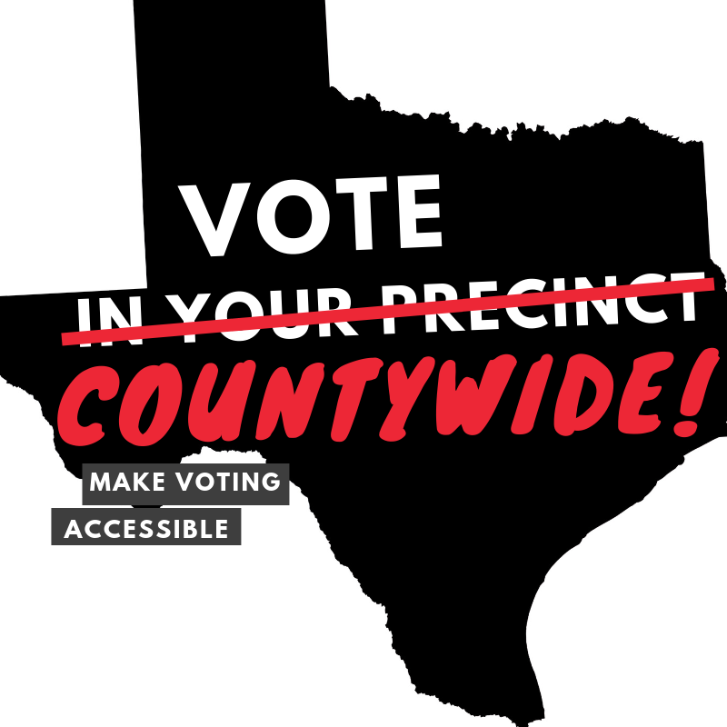
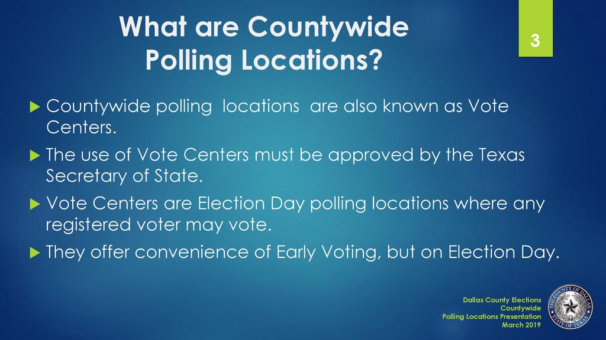

knitr::opts_chunk$set(warning = FALSE)
Visualizing Changes in Texas Turnout:
Precinct Polling to County-Wide Polling
Co-Authors: Mamie Cincotta, Warren Cox, Shiu-Ting Ling

This exploratory study examines the effects of transitioning to vote centers in Texas on voter turnout across demographics, election types, and time. The study builds on a mixed body of literature exploring the accessibility and participation impacts of election reforms. Previous research highlights that vote centers, which allow voters to cast ballots at any polling location within their county, reduce logistical barriers and increase convenience, potentially boosting turnout among infrequent voters (Stein & Vonnahme, 2008). However, findings are inconsistent. While some studies report overall turnout increases, particularly in urban areas (Stein & Vonnahme, 2012), others suggest declines, particularly among rural and minority voters, due to limited access to centralized locations (Cortina & Rottinghaus, 2019, 2023).
Additionally, state election laws significantly influence voter participation, with polling location accessibility and voter demographics playing crucial roles in turnout trends (Brady & McNulty, 2011; Cantoni, 2020). Gaps in the literature include a lack of focus on Black and Asian voters, minimal attention to turnout disparities in rural areas, and limited use of visual analyses to explore geographic and demographic patterns. By integrating geospatial and temporal visualizations, this study addresses these gaps and seeks to uncover nuanced patterns that explain the relationship between vote center consolidation and voter turnout in Texas. It also aims to explore whether consolidation reduces turnout among Black voters in rural areas or influences midterm election participation, responding to unresolved questions in the field.
Methodology
This study utilizes a multi-faceted approach to analyze the effects of vote center implementation on voter turnout across Texas. The data sources include historical election turnout data and polygon shapefiles for Texas counties from the Texas Capitol Archived Data, providing detailed election results across multiple election cycles. Demographic data at the county level were sourced from the U.S. Census Bureau and the Texas Association of Counties, offering insights into population characteristics such as age, race, income, and rural-urban classifications. Voter tabulation district (VTD) boundaries and associated demographic data were sourced from the 2010 Census, enabling a granular analysis at the sub-county level. Preprocessing involved unifying these datasets by aligning turnout data with demographic and geographic characteristics, ensuring consistency across spatial and temporal scales.
For the Temporal Map of County Voter Turnout, percentage changes in turnout were calculated for each election year and type (Presidential, Midterm, and Primary), while each county’s vote center consolidation status was encoded for visualization. The Dashboard of Texas Voter Turnout Rate Data integrates line charts, bar charts, scatter plots, and interactive maps to explore voter turnout trends and their relationships with demographic factors, augmented by statistical tests for significance. The Interactive Display of VTDs provides a detailed view of turnout patterns and demographic influences at a finer geographic scale, incorporating filters for user-defined parameters like election year, consolidation status, and demographic thresholds. Statistical methods such as Wilcoxon significance tests were employed to compare turnout differences across groups. These visualizations collectively leverage robust datasets and dynamic tools to uncover spatial and temporal trends, offering nuanced insights into the relationships between vote center implementation, voter turnout, and demographic characteristics.
Interactive Display of VTDS
The Interactive Display of Voter Tabulation Districts (VTDs) provides a fine-grained, dynamic exploration of voter turnout trends and demographic influences at a sub-county level. Built using Shiny, this visualization allows users to filter data by election year, demographic characteristics, turnout thresholds, and vote center consolidation status. The display includes features such as a color-coded map of VTDs, interactive popups with demographic and turnout information, and customizable comparisons across elections or consolidation statuses. The map is powered by user inputs, enabling detailed investigations of patterns that may not be apparent at the broader county level. Additionally, the dashboard includes a report generation feature that produces side-by-side boxplots and density plots, accompanied by statistical significance tests to assess differences in turnout or turnout changes.
One of the unique aspects of this visualization is its incorporation of Wilcoxon significance tests, which compare selected VTDs against the entire dataset, as well as subsets grouped by demographic and consolidation status. The Wilcoxon test was chosen due to the non-normal distribution of voter turnout data at the VTD level, caused by outliers such as sparsely populated VTDs with disproportionately high turnout. These tests provide p-values indicating whether differences in turnout between groups are statistically significant. For example:
VTDs with high Black or Hispanic populations consistently exhibited lower turnout compared to majority-white VTDs. However, in consolidated counties, minority-dense VTDs showed significantly higher turnout rates than their unconsolidated counterparts. This supports the hypothesis that vote centers can help mitigate turnout disparities in minority communities.
Turnout disparities were more pronounced in rural VTDs, where consolidation seemed to have a less consistent impact. In urban VTDs, vote centers were associated with slightly higher turnout rates across demographic groups.
The statistical tests confirmed that demographic factors such as race and poverty significantly influence turnout. For example, VTDs with higher poverty rates generally had lower turnout, but those in consolidated counties performed better relative to similar unconsolidated VTDs.
The display also allowed for longitudinal comparisons, revealing that consolidated VTDs experienced greater growth in voter turnout over time, particularly in presidential elections. However, this trend was less evident in midterm and primary elections.
By enabling users to filter data dynamically and providing statistical significance tests, the Interactive Display of VTDs offers robust tools for exploring complex turnout dynamics. Its findings emphasize the potential of vote centers to address inequities in voter participation, particularly for minority and economically disadvantaged populations, while highlighting the variability of these effects across different contexts.
Dashboard of Texas Voter Turnout Rate Data
The Dashboard of Texas Voter Turnout Rate Data was created to provide an interactive platform for examining overall voter turnout trends, demographic influences, and the role of vote centers in Texas elections. Built with Shiny and Flex Dashboard, the dashboard integrates four types of visualizations—line charts, bar charts, maps, and scatter plots—to explore turnout rates across different election types (Presidential, Midterm, and Primary) from 2012 to 2022. Each panel serves a distinct purpose: the line chart visualizes trends in voter registration and participation over time, the bar chart ranks counties by turnout rates, the map examines spatial distribution of turnout and vote center implementation, and the scatter plots investigate relationships between demographic factors and turnout.
Counties with higher median age consistently showed a significant positive correlation with voter turnout across all election types.
Higher levels of education and income also correlated positively with turnout in presidential and midterm elections, with p-values confirming statistical significance.
However, factors like race and urbanization exhibited more complex and weaker correlations, often varying by election type.
The dashboard’s primary purpose is to allow users to analyze how voter turnout interacts with both demographic characteristics (e.g., age, education, income, race) and vote center status. For example, the scatter plots revealed that counties with higher median ages and education levels tend to have higher voter turnout. The map panel further demonstrated that vote center participation (highlighted with pink borders) does not consistently correlate with higher turnout rates, challenging the hypothesis that vote centers universally boost participation. This visualization highlights the complexity of turnout dynamics, suggesting that demographic, geographic, and political factors may intersect in ways that overshadow the direct effects of vote center policies.
Temporal Map of County Voter Turnout
The Temporal Map of County Voter Turnout is an interactive visualization designed to explore voter turnout trends at the county level over multiple election years and types. Built as a Shiny app using the Leaflet library, the map allows users to dynamically select election types (Presidential, Midterm, or Primary) and years to examine percentage changes in turnout. This visualization serves the purpose of illustrating both spatial and temporal patterns in voter engagement, with a specific emphasis on understanding how vote center consolidation influences turnout trends across Texas counties. The chloropleth map uses a gradient color scale to represent turnout changes, with darker greens indicating significant increases and reds showing declines, while consolidated counties are highlighted with distinctive navy borders. Additionally, hover-over and click interactions provide detailed demographic and turnout data for individual counties, enabling a deeper exploration of the relationship between consolidation status and turnout.
The visualization revealed that consolidated counties, particularly in urban areas, often exhibited higher turnout changes compared to unconsolidated counties in presidential elections. However, the effect was less consistent for rural areas and midterm elections. This mixed pattern suggests that other factors, such as demographic shifts or political dynamics, may influence turnout more significantly than vote center consolidation alone. By enabling users to examine turnout trends at multiple spatial and temporal scales, the map provides a nuanced tool for investigating how changes in polling accessibility interact with voter engagement across diverse contexts.
Limitations
The study and its visualizations face several limitations that constrain their ability to provide definitive conclusions. A primary limitation is the narrow temporal scope, as the available data spans only a limited number of election years (2012 to 2024) since the implementation of vote centers in Texas, restricting insights into long-term trends. For the Temporal Map of County Voter Turnout, the focus on county-level data obscures localized effects within counties, such as those in minority-dense or rural areas, limiting its ability to capture granular variations. The Dashboard of Texas Voter Turnout Rate Data, while robust in its demographic analysis and statistical testing, is constrained by its reliance on aggregated county-level data, which may oversimplify the complex interplay between demographic factors and turnout.
Additionally, its scatterplots only reveal correlations, not causation, and lack control for confounding variables. The Interactive Display of VTDs, though offering a finer spatial resolution and incorporating significance testing, depends on VTD demographic data from 2010 census estimates, potentially overlooking demographic shifts over time. Furthermore, the non-normal distribution of turnout data necessitates robust statistical methods, but these may still be influenced by outliers, such as sparsely populated VTDs. Collectively, these limitations highlight the need for expanded datasets, additional election cycles, and more advanced statistical methods to fully understand the impacts of vote centers on voter turnout.